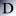

Toggle Navigation
Toggle navigation
比特磁力
学术搜索
设计素材
数据查询
好玩趣站
Toggle navigation
谷歌学术
必应学术
百度学术
CNKI学术
CNKI学术趋势
CNKI数字搜索
万方数据
OALib
FOAS文献检索
国图文津
超星发现
上图发现
中国学术
世界数字图书
中科院文献
SGST上研检索
Sci-Hub
PubMed
麻省理工文献
剑桥大学知识库
比勒费尔德学术
读秀
开元知海
水产科学
浙大图书馆
北大图书馆
水木搜索
香港大学文献
珞珈学术
汉典
OPEN 文档
DOAJ
JAIRO
CINII
bioRxiv
IEEE
化工词典
化合物检索
AMiner
电子元件数据